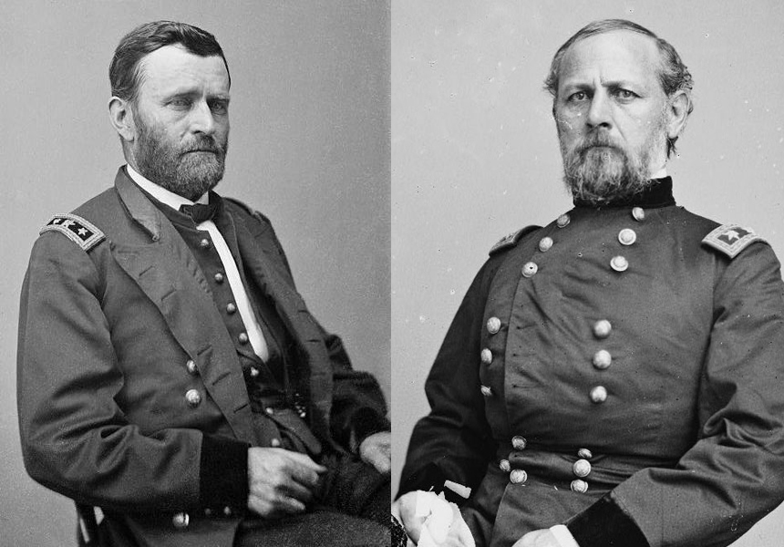
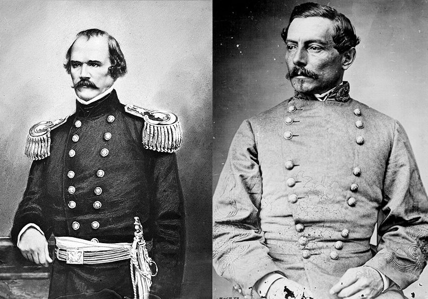
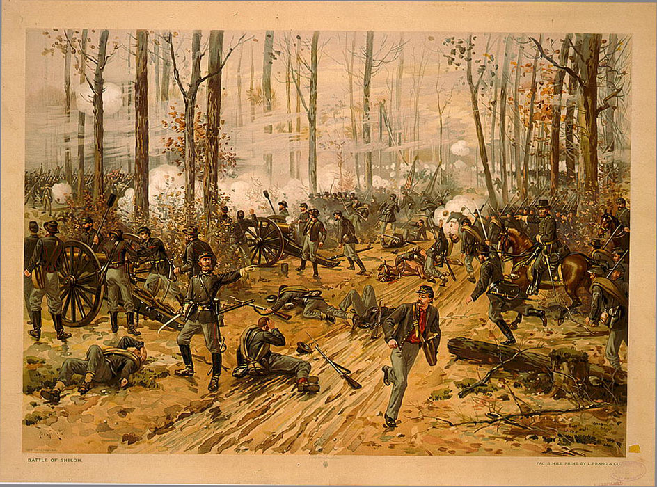

|
The Battle of Shiloh was a major Northern victory,
although a costly one. It secured western Tennessee for the
Union, and set the stage for advances into Mississippi in
1862 and 1863.
The Battle of Shiloh was the culmination of a string of
Union successes in Tennessee. The February 15, 1862 Union
capture of Fort Donelson on the Tennessee River resulted in
a major strategic shift in the Western Theater of the Civil
War. As the greatest tactical victory in the war to that
|

Union generals Ulysses S. Grant and Don Carlos Buell
|
time, it marked the emergence of Ulysses S. Grant as a major
military leader and opened the Tennessee River to Union
naval traffic, allowing for a direct invasion of the lower
south. For the Confederates, the loss represented a major
disaster. With nearly 15,000 troops captured and the center
of his defensive line in southern Kentucky pierced,
Confederate Department commander General Albert Sidney
Johnston was forced to withdraw more than 100 miles into the
Confederate interior. Nashville, a major site of war
production, was captured by the Union and the rich grain
fields and pork raising region of Middle Tennessee was
overrun. The forts defending the Mississippi River north of
Memphis were threatened with being cut off from behind.
Federal forces stood poised to strike the Confederate
railroad centers at Jackson, Humbolt and Corinth,
Mississippi.
This threat to the rebel heartland forced the Confederate
government to reconsider its previous policy of dispersing
troops over a wide geographic area in an attempt to defend
the entire perimeter of the Confederacy. Within a week of
Donelson's fall, President Davis wrote that he was
determined to "assemble sufficient force to beat the enemy
in Tennessee, and retrieve our waning fortunes in the west."
At the end of February, the Confederate president ordered
Braxton Bragg, who commanded the southern forces defending
the Gulf Coast region around Pensacola, Florida and Mobile,
Alabama to move his troops to Tennessee, where he would
consolidate with Johnston's force to counter the Federal
threat. While this concentration of military power was
unprecedented, it was not as complete as possible. Bragg
sent only 60% of his force to Tennessee and several large
contingents of Confederate troops remained idle in Texas and
Arkansas. Nonetheless, the Confederate concentration at
Corinth drew together just over 40,000 troops.
As the Confederates consolidated their force, conflict
among the Union high command in the west temporarily slowed
the Union drive south. However, by early March a large
expedition force had been organized at Fort Henry. Using
the Tennessee River as an invasion route, Union troops under
the overall direction of General Henry Halleck and
spearheaded by William T. Sherman's 5th Division quickly
moved into southern Tennessee and established a base of
operations around Savannah and Pittsburg Landing. By
mid-March five divisions of Union troops commanded by
Ulysses S. Grant had concentrated there and threatened
Corinth, the site of a major Southern rail connection.
Throughout the last weeks of March and into early April, the
area around Pittsburg Landing mushroomed into a vast army
camp containing nearly 45,000 combat troops. While the army
included several units that had seen combat at Fort Donelson
and other smaller clashes, many of the Union troops had yet
to engage the enemy. Still, confidence ran high among the
rank and file who believed as one solider put it "the
rebellion is getting nearly played out, and I expect we will
be home soon." Generals shared this confidence. One
division commander wrote, "Sesech is about on its last legs
in Tennessee." Grant himself wrote "with one more success I
do not see how the rebellion is to be sustained."
Still, problems plagued the army. The arms carried by
most Union soldiers were outdated flintlock muskets that had
been converted to percussion locks. These muskets were
accurate to about 100 yards. Beyond that, their accuracy
diminished dramatically. Sickness also plagued the army and
doctors sent thousands of sick soldiers to large hospitals
in the north, reducing the fighting capabilities of many
regiments. Conflicts between top level officers created
more problems for Grant, who spent much of late March
dealing with a variety of petty issues. Only one of the
division commanders, William T. Sherman, held a West Point
degree. Most problematic was the choice of campsites.
Located on the west side of the Tennessee River, the same
side held by the Confederates, the Pittsburg Landing
encampment lay open to attack. Union commanders could have
|

Confederate generals Albert Sidney Johnston and P.G.T. Beauregard
|
moved to the other side of the Tennessee River, or could
have built defensive works, but they were convinced that the
southern army would never try to attack.
The Rebel leaders, meanwhile, prepared for an offensive
that would drive the Federal army back to Kentucky.
However, they faced their own set of obstacles. The army
that they assembled had never worked together, the staff
were not coordinated, and many of the high level officers
had never commanded such large numbers of troops. Most of
the regiments were undermanned and the majority had never
fired a shot in combat. Illness took a further toll on the
army and as much as 16% of the army was on the sick list on
April 3. Arms consisted of a motley assortment of squirrel
rifles, percussion muskets, flintlocks, and shotguns.
Visual cues underscored the hodgepodge nature of the rebel
force. Clothing bore no standard cut or fabric and as one
soldier put it "some wore uniforms, others half uniforms,
some no uniforms at all." Despite these apparent weaknesses,
the soldiers, citizens, and government called for quick and
dramatic action to counter the Union success of the winter.
Thus, Johnston prepared his army to strike what he hoped
would be the decisive blow.
Faced with the knowledge that Don Carlos Buell's Army of
the Ohio had departed Nashville and was moving to reinforce
Union troops at Pittsburg Landing, Confederate commander
Albert Sidney Johnston determined to attack Grant's force
before a consolidation could be made. Johnston knew that if
the two northern forces combined they would nearly outnumber
his forces two-to-one. The rebels, faced with a rapidly
closing window of opportunity, looked for any weaknesses in
Grant's position. A March 31-April 1 reconnaissance led by
Confederate general Benjamin Cheatham suggested that Grant
had divided his force. Johnston's second in command, P.G.T.
Beauregard, concluded, "now is the moment to advance and
strike the enemy at Pittsburg Landing." On the morning of
April 2, the Confederate leaders began drafting a plan to
move forward. Primarily drafted by Beauregard, the plan
proved disastrous. The scheme included a complicated advance
along two roads and a confusing deployment that placed the
army's three corps in successive lines of battle. Once in
line, the inexperienced troops were to deliver an attack
that would drive the Union left flank away from the
Tennessee river into the bottoms of Owl Creek, where the
Yankees would be compelled to surrender. Thus prepared, the
Confederates marched out of Corinth April 3, 1862.
The Rebel plan was ill suited to both the experience of
the army and to the conditions in northern Mississippi and
southern Tennessee. The first day's march proved a fiasco.
Vague orders and mishandled communications led to clogged
roads and much unnecessary marching and countermarching.
Poor weather and the wretched condition of the two roads
that led from Corinth to Pittsburg Landing resulted in
delays and frustration. Once they neared the Union forces,
chaos reigned. Johnston delayed the attack, planned for
April 5, because several divisions had become entangled on
the march and failed to arrive at their proper position.
Furthermore, inexperienced soldiers began firing their
muskets to be certain they worked. Others cheered for their
generals as they rode past and throughout the army drums
beat and bugles blared. Surely, several rebel leaders
thought, the element of surprise had been lost. Johnston
nonetheless decided to press forward with his attack on
April 6.
Despite the Confederates' inefficient march, their
initial attack against William T. Sherman's troops caught
the Union forces entirely by surprise. Though warned by
subordinates that a large secessionist force lay within easy
striking distance, Sherman scoffed at the idea and did
little to prepare his men for a fight. His reassurances led
Grant to write on the evening of April 5, "I have scarcely
the faintest idea of an attack (general one) being made upon
us." So unprepared were the Union troops that when the
rebels poured out of the woods to their south, they were
cooking breakfast and getting ready for their weekly
inspection. The first Confederate attacks routed both
Sherman's and Prentiss' divisions. Stout resistance,
however, emerged in two sections: in the Union center, and
on the Union left, near a small chapel named Shiloh church.
The impact of the fierce fighting that raged all along the
battle line threw the southerners' cumbersome attack
formation into confusion. Many of the brigades had lost all
semblance of order as the lines piled upon each other, and
officers were assigned command of portions of the line
without regard to corps organization. To compound the
command problems, at about 2:30 p.m., the Rebel commander
Johnston fell mortally wounded.
Meanwhile, as the fighting increased around Pittsburg
Landing, Grant arrived to take charge of the action. He
ordered reinforcements from Buell's army across the
Tennessee River, gave orders to the troops in the center to
|

The Battle of Shiloh, in a popular
1888 painting by Thure de Thulstrup.
|
hold on at all costs, and issued orders to create a final
defensive line near Pittsburg Landing. Despite launching
nearly a dozen desperate attacks against the Union center,
the line held until near dark. Centered on a large
concentration of artillery and bolstered by the fire of
Union gunboats on the river, Grant's line at the landing
proved formidable, although its strength began to dwindle by
the end of the day, because the reinforcements Grant had
ordered never arrived. Before the line could give way,
nighttime came, and Beauregard, who had assumed command upon
Johnston's death, ordered a halt to the rebel advance.
Beauregard felt confident that his troops would be able
to break the Union line on the 7th, and to secure victory
for the Confederacy. However, during the night, Buell's
troops finally arrived. On the morning of April 7, Grant
organized an attack led by three fresh divisions from
Buell's army. At first successful in regaining the ground
lost on the 6th, the Confederate defense stiffened and the
fight seesawed back and forth. The weight of Buell's
reinforcements, however, proved overwhelming and at about
5:00 p. m. the Confederates retreated from the field. The
day's heavy fighting discouraged a Union pursuit, and the
Battle of Shiloh had come to an end.
Shiloh exacted a great toll on both armies. Confederate
Losses were 1,723 killed, 8,012 wounded, and 959 captured or
missing out of 40,335 engaged. Union Losses were 1,754
killed, 8,408 wounded and 2,885 captured or missing out of
62,682 engaged. The battle enhanced Ulysses S. Grant's
reputation as a general, but also strengthened the
perception of him as "Grant the butcher". After their
victory at Shiloh, Grant and his troops would travel a
difficult road. It would be over a year before they would
achieve their next major objective, the capture of
Vicksburg, Mississippi.
Source: Joan Waugh, ed., Facts on File Encyclopedia of American
History: Civil War and Reconstruction, 1856 to 1869 (New York: Facts on
File, 2003), 321-326.
|